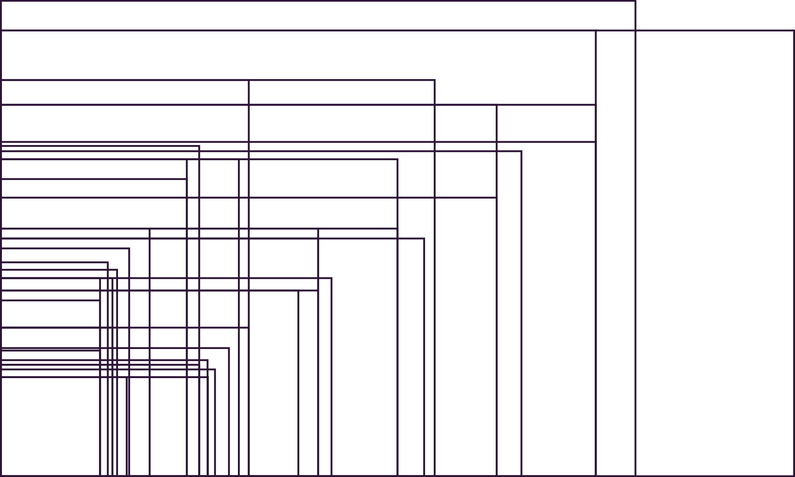

Devices
Browsers
- Chrome
- Safari
- Firefox
- IE/Edge

Devices
- Phones
- Tablets
- Consoles
- Hand-held Gaming

Wearables
- Watches
- Bands
Things
- Televisions
- Fridges
- Cars
Selected screen resolutions from 300+ mobile, tablet, laptop, and desktop screen resolutions.
NOTE: Resolutions and not viewport sizes
Responsive Web Design is an approach to creating websites that can respond to ALL known web browsing devices, with content delivery and UI interaction optimized to the greatest degree possible for ALL visitors.
Kezz Bracey — TutsPlus
Responsive ≠ Desktop + Mobile.
Responsive = Responds to all Sizes.
NOTE: Screen resolutions not viewport size.
Patterns are design solutions to common UI problems using components.
A reusable solution to a commonly occuring.
Card Content
A robust pattern should have mutiple designed states.
Aenean eu leo quam. Pellentesque ornare sem lacinia quam venenatis vestibulum. Nulla vitae elit libero, a pharetra augue. Etiam porta sem malesuada magna mollis euismod. Maecenas sed diam eget risus varius blandit sit amet non magna.
Card Content
Card Content
Atoms are basic tags, such as form labels, inputs or buttons. They also include more abstract elements like color palettes, fonts, and animations.
| Label | |
| Input | |
| Button |
Molecules are groups of elements that function together as a unit.
For example, a form label, search input, and button atom can combine them together to form a search form molecule.
Organisms can consist of similar molecule types.
For example, a masthead organism might consist of a logo, navigation, and search form, while a “product grid” organism might consist of the same product info molecule repeated over and over.
Item Description
Item Description
Item Description
Templates are comprised mostly of organisms combined together to form page-level objects.
Templates mostly focus on content structure (such as character length, image size, etc) rather than the actual content.
Pages are specific instances of templates and swap out placeholder content with real representative content to give an accurate depiction of what a user will ultimately see.
Pages are essential for testing the effectiveness of the design system.
Pages also provide a place to test variations in templates, such as testing an article containing a 40-character-length headline and other article with a 340-character-length headline.
| Title | Link |
|---|---|
| Pattern Lab | http://patternlab.io/ |
| About Style Guides | http://bradfrost.com/blog/post/style-guides/ |
| Style Guides | http://styleguides.io/ |
| There is no Fold | http://www.lukew.com/ff/entry.asp?1946 |
| TITLE | URL |
| TITLE | URL |
| TITLE | URL |
| TITLE | URL |